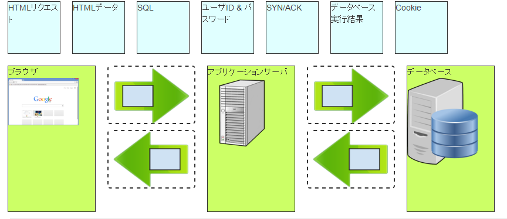

サーバとブラウザ,データベースの関係の演習
ウェブアプリケーションを構成する サーバとブラウザの関係を俯瞰的視点を通して確認していきましょう。
事前に確認する用語
- サーバ ： クライアントサーバモデルにおいてクライアントからの要求に対して何らかのサービスを提供する役割を果たす。今回はウェブサーバを中心にすすめる。
- ブラウザ： ウェブページを画面や印刷機に出力したり、ハイパーリンクをたどったりするなどの機能がある。単にブラウザ（ブラウザー）と呼んだ場合、多くはウェブブラウザのことを指す。
- 関係データベース：は関係モデル（リレーショナルデータモデル、後述）にもとづいて設計、開発されるデータベースである。SQLなどに代表されるデータベース言語（問い合わせ言語）を用いて、関係に対して制限・射影・結合・和・差・交わりなどの関係代数演算（集合演算を含む）ないし関係論理演算を行うことで結果を取り出す。
参考URL
演習を行うにあたって
それでは、実際にウェブアプリケーションの構造を本システムが提供する俯瞰的視点を通して学びましょう
演習の目的
情報システムに対する俯瞰的視点を通して、システム内部でどのような作用が行われているのかを確認します。
また、演習を通して本システムの操作方法を学習します
演習イメージと操作方法
演習は以下のような情報システム（ウェブアプリケーション）を抽象化したシミュレーションシステムを用います。
以下の手順でシミュレーションを操作してみましょう。
- 今回の例ではサーバとブラウザ,データベースとの間でやり取りされる情報に関して何がやり取りされるか確認してみましょう。
- 構成は 上に並ぶ四角い要素がそれぞれのデータを表現し、下に並ぶ四角と矢印の組み合わせが抽象化された情報システムを表します。
- 上の矢印をドラッグして、該当する矢印中の枠に入れてみましょう
- すべての矢印に該当するデータを入れたら、下にある"実行"を押してシミュレーションを進めていきましょう。
- 実行を押すたびに、シミュレーション上の情報システム内部での処理が進みます。矢印中のデータは正しい内容であればそのまま実行されますが、不正解の場合はそこで処理が止まってしまうので、やり直してみましょう
- すべてのステップが終了し、シミュレーション上の目的を達すると画面右側に表示されるリンクから次へ進むことができます